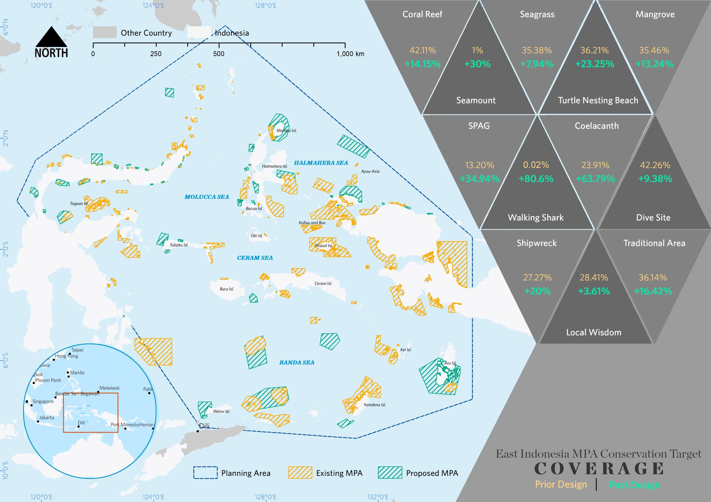

Marine Protected Area Network Design for FMA715
A large-scale marine spatial planning project for eastern Indonesia, designing an MPA network across FMA715 and six provinces. The project combined GIS, Marxan systematic conservation planning, marine gap analysis, participatory expert mapping, habitat representation...
Marxan - GIS - Marine Gap Analysis - MPA Network Design